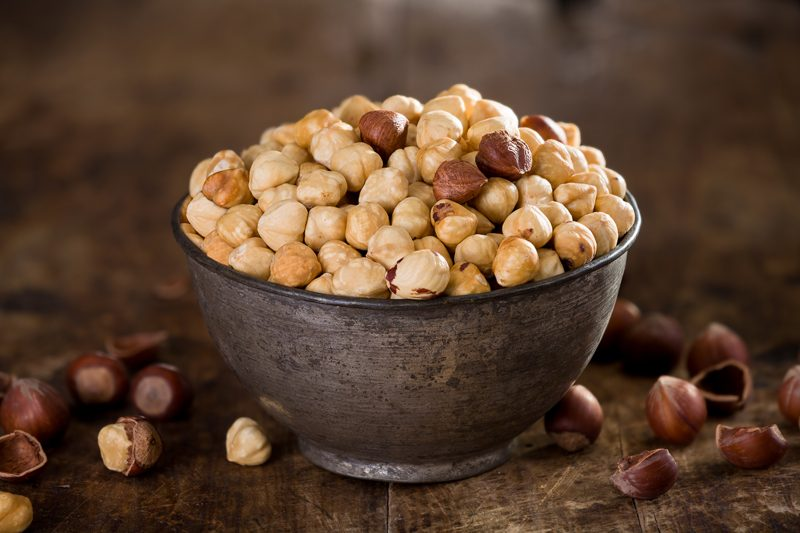

Hazelnuts | Soaking and Drying
Hazelnuts, also known as filberts, may be small in size, but hazelnuts pack a large amount of valuable nutrients. They are a good source of vitamin E, thiamin, copper and manganese.
As any typical nut, they are high in fat but it’s a healthy fat. Gosh, if I had a nickel for every time I heard that… “But it’s a healthy fat…” It is true but like everything else, we must exercise the thought of everything in moderation. If you have cholesterol issues, hazelnuts have nearly 13 grams of monounsaturated fat per one ounce serving.

Paired with the polyunsaturated fat, these healthy lipids work to reduce bad cholesterol, maintain healthy arteries, and improve overall heart health.
The hazelnut tree is amazing, as most are but there is something special about the hazelnut tree… While other plants and trees are “sleeping” during the winter months, the hazelnut is busy pollinating. Pollen is spread by the wind and rain to very tiny red flowers. After that, the trees take a short break before they begin their spring growth. In late spring the nuts begin to form. By mid-summer, green nuts in clusters can be seen throughout the orchards.
In the photos, you can see that hazelnuts are surrounded by a brown paper wrap. This can be removed but it isn’t an easy task. Whether you remove it or not, it is up to you. I have read were many people roast or boil them, which aids in removing the skins but they won’t remain raw if you use those techniques. Outside of that, you can rub them together while wrapped in a towel, which will remove some of the skins but not all. If you are really bored, and I don’t think that I am ever that bored… you can hand peel them.

Why must we go through all this trouble? I find soaking nuts a very important step when it comes to my digestion. When nuts/seeds are soaked and/or sprouted in water, the germination process begins, in which the active and readily available amounts of enzymes, vitamins, minerals, proteins and essential fatty acids begins to be activate.
Nuts and seeds contain phytic acid and enzymes inhibitors which make it quite hard on the stomach and digestion. This simple process can make all the difference in how you feel after consuming them and how your body assimilates them .To read more about the importance of why our bodies benefit from soaking nuts and seeds, click (
here).
 Ingredients:
Ingredients:
- 4 cups raw hazelnuts, shelled
- 1 Tbsp sea salt
- 6-8 cups water
Preparation:
Soaking:
- Place the hazelnuts and salt in a large bowl along with 6-8 cups of water.
- Leave them on the counter for 8-12 hours. Cover with a clean cloth and lay it over the bowl, this allows the contents of the bowl to breathe.
- After they are done soaking, drain them in a colander and rinse well.
Dehydrator method:
- Spread the hazelnuts on the mesh sheet that comes with the dehydrator. Keep them in a single layer and dry them at 115 degrees (F) until they are thoroughly dry and crisp.
- Make sure they are completely dry. If not, they could mold, plus they won’t have that crunchy, yummy texture you expect from nuts and seeds.
- The dry time will vary due to the machine you own, the type of climate you live in and how full your dehydrator is when drying them.
- Expect anywhere from 12 + hours.
- Allow them to cool to room temperature before storing.
- It is best to chop, slice, and grind hazelnuts just before use, this will keep them fresher longer. They will keep for over a year in the freezer and as long as they are kept in an airtight container protecting them from foods with strong odors.
Oven method:
- Preheat the oven to 275 degrees (F).
- Spread the whole kernels in a single layer on a baking sheet and bake at 275 degrees (F) for 15-20 minutes. Take care not to over roast as nuts can scorch quickly.
- Cool for about 1 hour. Make sure that they are cool before storing.
- Note ~ You can also attempt to dry the hazel nuts in the oven and keep them raw but this is tricky. You will need to set the oven on the lowest setting, keep the door ajar and hang a thermometer in the oven to watch the temperature. Nothing is impossible. With this method… good luck and do your best. :)
© AmieSue.com